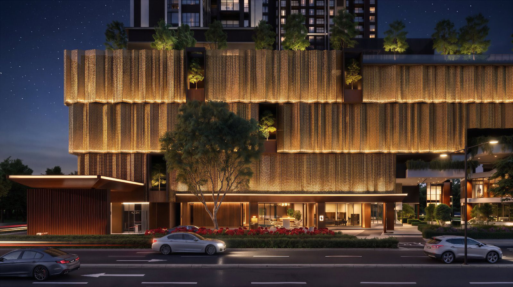
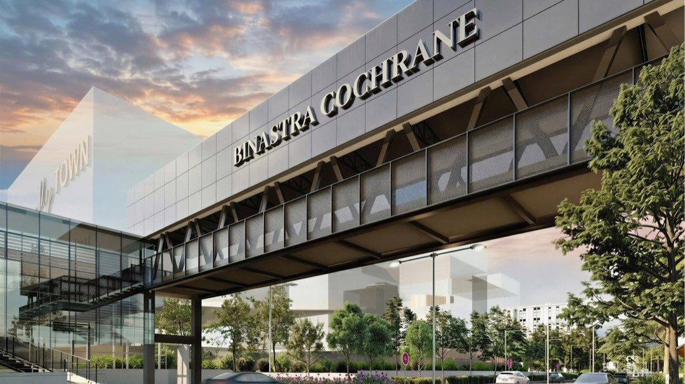
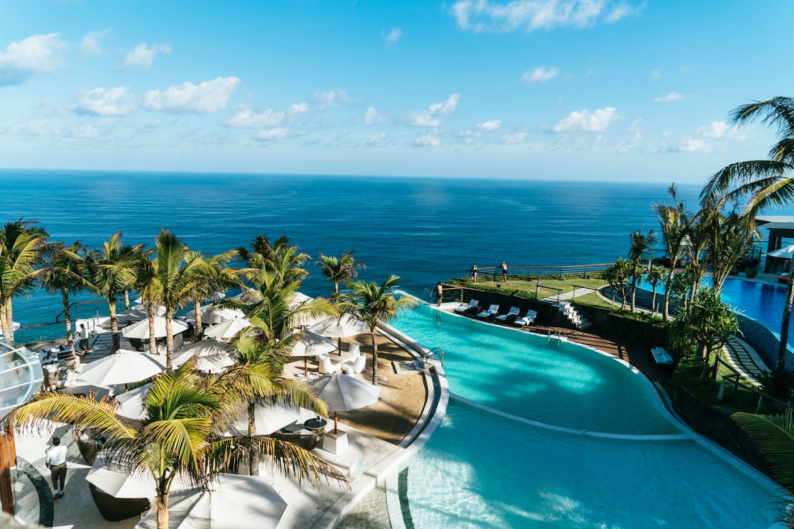
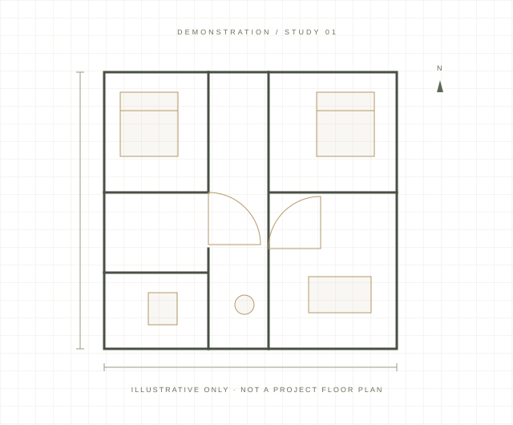
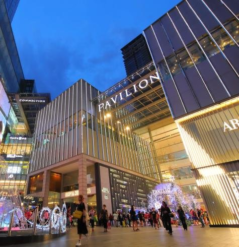

A connected city
Explore Cochrane MRT and the wider rail network, with connections towards TRX and Bukit Bintang.
ESTABLISHED TRANSPORT
COCHRANE, KUALA LUMPUR
A connected address. A considered lifestyle.
Your next chapter, in the heart of Kuala Lumpur.
Presented independently by Premm · Affinity Realty
01 / THE ADDRESS
An urban address with a world of possibilities around it.
Binastra Cochrane is a contemporary residential development by Binastra Land in Kuala Lumpur’s Cochrane district. City connections, established shopping destinations and everyday essentials shape the neighbourhood around you.
Discover a different rhythm of city living, with Cochrane MRT, MyTOWN and Sunway Velocity in the surrounding area.
Explore your neighbourhood
This website is independently operated by a property representative from Affinity Realty. It is not the official website of Binastra Land.
02 / CONSIDERED CONNECTIONS
A thoughtfully placed address.
A neighbourhood ready to explore.
Explore Cochrane MRT and the wider rail network, with connections towards TRX and Bukit Bintang.
ESTABLISHED TRANSPORTShopping, dining and daily essentials at MyTOWN, IKEA Cheras and Sunway Velocity in the surrounding district.
EXISTING DESTINATIONSThe developer describes a focus on sustainable design and greener spaces. Detailed specifications await confirmation.
DEVELOPER’S DESIGN INTENTExplore the announced future Monash TRX campus and other developments being followed in the neighbourhood.
EXPLORE FUTURE DEVELOPMENTS ↗03 / THE ART OF EVERYDAY
A little distance from the pace of the city.
A little more time for yourself.

The developer describes lifestyle facilities for recreation, wellness and relaxation. The approved facility schedule and project imagery will complete this story.
Recreation & connection
Wellness & wellbeing
Rest & relaxation
Lifestyle themes are illustrative. Specific facilities and access arrangements are not confirmed here.
Request facility details04 / THE RESIDENCES
Explore the layout experience.
Let’s find a home that fits your life.

SCHEMATIC ONLY · NOT TO SCALEEXPLORE THE POSSIBILITIES
An illustrative composition exploring connected spaces. Select another study to preview the interaction.
These demonstration drawings are placeholders, not Binastra Cochrane unit plans. No dimensions or room counts are represented.
Request official floor plans05 / A CITY AT YOUR DOOR
From everyday essentials to city discoveries,
get to know the Cochrane neighbourhood.
EXISTING TRANSPORT
An established station on the Kajang Line, connecting the Cochrane district with the wider city. Walking routes and project access arrangements should be confirmed with your advisor.
Illustrative neighbourhood explorer · Not a geographic map.
Positions, routes and proportions are schematic.
Existing amenities shown above. Future developments shown separately below.
Ask about getting here06 / THE NEXT CHAPTER
A closer look at the plans shaping
the wider Cochrane and TRX conversation.
 ANNOUNCED · FUTURE CAMPUSTRX district context image
ANNOUNCED · FUTURE CAMPUSTRX district context imageEDUCATION / TRX
Monash has announced a future Kuala Lumpur campus in partnership with TRX City. This is a future development, not an operating campus at TRX.
Read the university announcementCOMMERCIAL / TRX
A development to follow in the wider TRX district. Approved project particulars, current status and delivery dates remain to be verified for this website.
Request verified updatesRESIDENTIAL / COCHRANE
Included as a future-development reference. The formal project name, relationship to other Cochrane phases, specifications and timing await confirmation.
Register your interestFuture developments are subject to their respective approvals and delivery. No completion dates, investment returns or guaranteed benefits are represented.
07 / FOLLOW THE STORY
Explore development milestones.
Confirmed announcements, clearly distinguished.
ANNOUNCEMENT · 28 OCTOBER 2025
Monash University announced its future Kuala Lumpur campus with TRX City. This milestone records the announcement; it does not indicate an existing campus or guarantee delivery.
View sourceStatus-based preview timeline. Placement does not imply a chronological completion order. Unverified completion dates are intentionally omitted.
08 / A CLOSER LOOK
6 images · Select an image to explore


Artist impressions are subject to change. Illustrative lifestyle and interior photographs do not depict Binastra Cochrane or its confirmed facilities.
09 / A PERSONAL PERSPECTIVE
Hello, I’m Premm.
I’m Premm Enbasegaran, a property representative with Affinity Realty Sdn. Bhd. Whether you’re exploring Cochrane for your next home or comparing your options, let’s start with the details that matter to you.
Ask me about the latest approved plans, project information and available viewing arrangements.
10 / YOUR NEXT CHAPTER
A personal conversation. Clearer possibilities.
Connect with Premm on WhatsApp.
Opens WhatsApp. Your message is sent only when you choose to send it there.